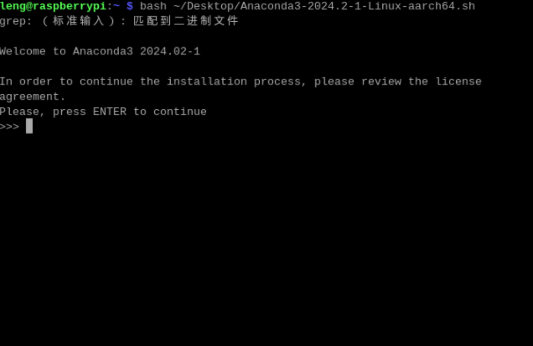
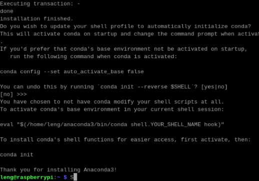
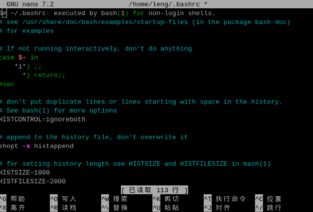
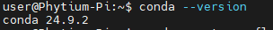
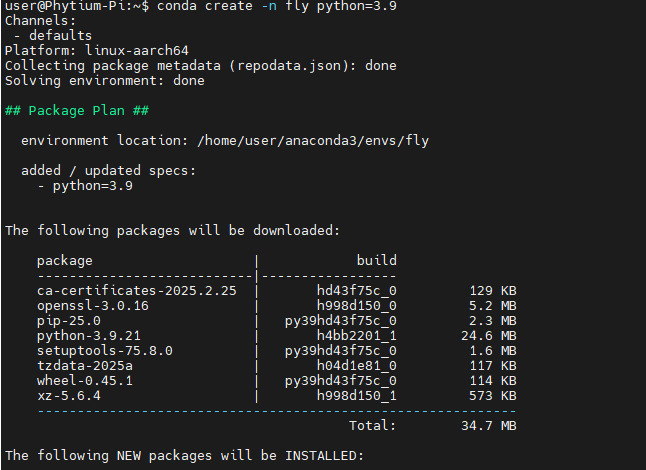
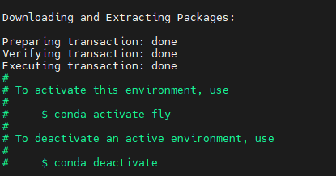
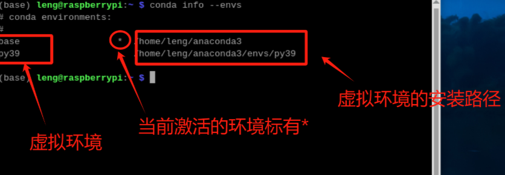
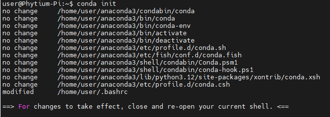

开发环境配置
环境配置
本项目使用的是飞腾官方提供的镜像xfce_v2.1_4GB_240123.tar.gz，系统是ubuntu20.04，python3.9.5
建议使用Anaconda3配置一个虚拟环境，如果出错可以轻松从头再来，但本次为了懒得再安装一次系统本身自带的配置，于是没有采用该方法。但在最后讲了应该如何在飞腾派中安装anaconda3并配置虚拟环境，有兴趣的话可以试一下。
Python3.9安装
飞腾派镜像默认下载了python3.8，但是本次项目拟采用python3.9，固需要升级
1.通过系统包管理器安装
在 Ubuntu 20.04 上，可以通过以下步骤安装 Python 3.9：
更新包管理器索引：
1
sudo apt update
安装 Python 3.9：
1
sudo apt install python3.9 python3.9-distutils
验证安装：
1
python3.9 --version
2.设置默认 Python 版本（可选）
如果你想让 python3 命令默认指向 Python 3.9，可以创建一个符号链接：
1 | sudo update-alternatives --install /usr/bin/python3 python3 /usr/bin/python3.8 1 |
在提示中选择 python3.9。
3. 安装 pip 以支持 Python 3.9
安装完 Python 3.9 后，需要为其安装 pip：
下载
get-pip.py脚本：1
wget https://bootstrap.pypa.io/get-pip.py
使用 Python 3.9 运行脚本：
1
python3.9 get-pip.py
验证
pip安装是否成功：1
python3.9 -m pip --version
4.测试是否安装成功
随便编写一个脚本在终端中运行 python test.py
如果出现 -bash: python：未找到命令 的错误，说明系统中没有找到默认的 python 命令。这可能是因为：
- 系统中没有安装 Python。
- 系统中安装了 Python，但没有创建
python或python3的符号链接。 - 当前环境中使用的 Python 版本不是默认版本。
以下是解决方法：
方法 1：检查是否安装了 Python
运行以下命令，检查系统中是否有 Python 安装：
1 | python3 --version |
如果返回类似以下内容，则说明 Python 已安装：
1 | Python 3.8.10 |
如果没有安装，可以按照以下步骤安装 Python。
安装 Python 3（适用于 Ubuntu 20.04）
1 | sudo apt update |
方法 2：创建 python 到 python3 的符号链接
在某些系统中，默认的 python 命令可能被移除，只保留了 python3。你可以通过创建符号链接来解决这个问题。
创建符号链接：
1 | sudo ln -s /usr/bin/python3 /usr/bin/python |
验证：
1 | python --version |
如果输出显示 Python 的版本号（例如 Python 3.9.5），则说明问题已解决。
方法 3：直接使用 python3 运行脚本
如果你不想创建符号链接，可以直接使用 python3 命令运行脚本：
1 | python3 test.py |
方法 4：检查虚拟环境
如果你正在使用虚拟环境（例如通过 venv 或 conda 创建的环境），需要确保虚拟环境中已激活并正确配置。
激活虚拟环境：
1 | source /path/to/venv/bin/activate |
验证：
1 | which python |
如果输出类似于 /path/to/venv/bin/python，说明虚拟环境中的 Python 正常工作。
方法 5：修复 PATH 环境变量
如果系统中确实安装了 Python，但仍然无法找到 python 或 python3 命令，可能是 PATH 环境变量配置有问题。
检查 PATH：
1 | echo $PATH |
手动添加 Python 路径：
编辑 ~/.bashrc 文件，添加以下内容：
1 | export PATH=$PATH:/usr/bin |
保存后使更改生效：
1 | source ~/.bashrc |
Cmake3.20.0+安装
本次项目采用的是cmake-3.28.3，已经在官网上下载了安装包，要在飞腾派开发板上安装 cmake-3.28.3-linux-aarch64.tar.gz，可以按照以下步骤进行操作。以下是详细的说明：
1. 解压文件
首先，通过 SSH 登录到开发板，并确保你已经将 cmake-3.28.3-linux-aarch64.tar.gz 文件传输到了开发板的某个目录（例如 /home/user/ 或 /tmp/）。
使用以下命令解压 .tar.gz 文件：
1 | tar -xvzf cmake-3.28.3-linux-aarch64.tar.gz |
解压后会生成一个目录，通常命名为 cmake-3.28.3-linux-aarch64。
2. 移动到合适的位置
为了方便管理，建议将解压后的 CMake 移动到系统的标准路径，例如 /usr/local/。
执行以下命令：
1 | sudo mv cmake-3.28.3-linux-aarch64 /usr/local/cmake-3.28.3 |
3. 配置环境变量
为了让系统能够识别新安装的 CMake，需要将其二进制文件路径添加到 PATH 环境变量中。
编辑 ~/.bashrc 文件：
1 | nano ~/.bashrc |
在文件末尾添加以下内容：
1 | export PATH=/usr/local/cmake-3.28.3/bin:$PATH |
保存并退出编辑器后，使更改生效：
1 | source ~/.bashrc |
**问题：**如果显示：nano ~/.bashrc -bash： nano：未找到命令
解决方案：安装nano
更新包管理器索引 ：
1
sudo apt update
安装 nano ：
1
sudo apt install nano
安装完成后，再次尝试编辑 文件：
.bashrc1
nano ~/.bashrc
4. 验证安装
验证 CMake 是否安装成功以及版本是否正确：
1 | cmake --version |
如果安装成功，你应该会看到类似以下的输出：
1 | cmake version 3.28.3 |
5. 可选：创建符号链接（如果需要全局使用）
如果你希望所有用户都能直接使用这个版本的 CMake，可以创建一个符号链接到 /usr/bin/。
执行以下命令：
1 | sudo ln -sf /usr/local/cmake-3.28.3/bin/cmake /usr/bin/cmake |
再次验证：
1 | which cmake |
注意事项
- 权限问题：在执行
sudo命令时，确保你有足够的权限。 - 依赖项：虽然 CMake 是独立的工具包，但某些功能可能依赖于系统中的其他库。如果遇到问题，请检查是否有缺失的依赖项。
- 卸载旧版本：如果系统中已存在旧版本的 CMake，可以通过包管理器卸载（例如
apt remove cmake），然后替换为新版本。
完成以上步骤后，你应该能够在飞腾派开发板上成功安装并使用 CMake 3.28.3。
YOLOv5项目环境配置及运行
==注意：==项目需要的torch版本不要大于2.5否则会出错!!!因此不能直接使用命令pip install -r requirements.txt直接进行安装，否则大概率会安装最新的版本。
1.torch1.8.1+torchversion0.9.1
1.1安装包下载
为了节省时间，用开发板直接下载会很慢，可以使用其它的源，如阿里、清华源等。
本项目已经在官网上下载了torch-1.8.1-cp39-cp39-manylinux2014_aarch64.whl和torchvision-0.9.1-cp39-cp39-manylinux2014_aarch64.whl文件
==注意：==下载的版本需要和你的环境匹配！！！要满足以下三点！！！
- 架构匹配：文件名中的
aarch64表示这是为 ARM 64位架构 编译的包，而飞腾派（Phytium-Pi）使用的是 Phytium ARM v8 架构（aarch64），因此兼容。 - Python 版本匹配：文件名中的
cp39表示包是为 Python 3.9 编译的，与本次的环境（Python 3.9.8）完全兼容。 - 系统兼容性：
manylinux2014是 Linux 平台的二进制兼容性标签，适用于主流 Linux 发行版（包括飞腾派的操作系统）。
以 torch-1.8.1-cp39-cp39-manylinux2014_aarch64.whl 为例：
torch-1.8.1: PyTorch 库的版本号（1.8.1）。cp39: 表示该包适用于 Python 3.9（cp是 “C Python” 的缩写，后接 Python 主版本号）。manylinux2014: 表示该包兼容符合manylinux2014标准的 Linux 系统（支持 CentOS 7+、Ubuntu 16.04+ 等）。aarch64: 表示该包是为 ARM 64位架构 编译的。
同理，torchvision-0.9.1 的命名规则与 PyTorch 一致。
官网：download.pytorch.org/whl/torch_stable.html（CPU版本）
1.2检查当前的 pip 版本
首先，确认你的 pip 是否为最新版本。YOLOv5 和其他深度学习框架可能需要较新的 pip 版本来支持 .whl 文件的安装。
运行以下命令检查 pip 版本：
1 | pip --version |
如果版本较低（例如低于 20.x），建议升级 pip：
1 | pip install --upgrade pip |
验证升级是否成功：
1 | pip --version |
1.3 安装 torch 和 torchvision
已经下载了 torch-1.8.1-cp39-cp39-manylinux2014_aarch64.whl 和 torchvision-0.9.1-cp39-cp39-manylinux2014_aarch64.whl 文件。接下来可以通过 pip 安装这些文件。
方法 1：直接使用 pip 安装 .whl 文件
假设 .whl 文件位于 /path/to/wheel/ 目录下，执行以下命令：
安装 PyTorch：
1 | pip install /path/to/torch-1.8.1-cp39-cp39-manylinux2014_aarch64.whl |
安装 TorchVision：
1 | pip install /path/to/torchvision-0.9.1-cp39-cp39-manylinux2014_aarch64.whl |
方法 2：将 .whl 文件上传到开发板并安装
如果你是通过 SSH 将 .whl 文件上传到开发板的某个目录（例如 /home/user/），可以直接在该目录下运行：
1 | cd /home/user/ |
1.4 验证安装是否成功
安装完成后，验证 torch 和 torchvision 是否正常工作：
运行以下 Python 脚本：
1 | import torch |
输出应该类似于：
1 | PyTorch version: 1.8.1 |
注意：飞腾派开发板通常不支持 CUDA，因此 torch.cuda.is_available() 应该返回 False。
2.numpy 1.26.4
当你在安装 时，如果需要下载依赖项（例如 ），但网络速度很慢，可以通过以下方法手动下载并安装这些依赖项。
官网：numpy ·PyPI
在文件列表中找到适合你环境的 文件，例如 ：
numpy-1.26.4-cp39-cp39-manylinux_2_17_aarch64.manylinux2014_aarch64.whl
==注意：==当在开发板上使用默认安装的时候会下载2.0.0+的版本与torch1.8.1不匹配，因此本项目选择1.26.4
将文件上传到开发板后，使用 手动安装。.whl``pip
假设文件位于目录下，运行以下命令安装：.whl``/home/user/
1 | pip install /home/user/numpy-2.0.2-cp39-cp39-manylinux_2_17_aarch64.manylinux2014_aarch64.whl |
安装完成后，继续安装其他依赖项
检查 numpy 是否正常工作：
运行以下命令：
1 | import numpy as np |
如果输出正常，则说明 NumPy 安装没有问题。
如果出现问题：
可以尝试卸载当前的 NumPy 并重新安装稳定版本：
1 | pip uninstall numpy |
3.opencv-python
如果你希望手动下载 文件以节省时间或避免网络问题，可以从以下地址获取：.whl
- OpenCV 官方 PyPI 页面
- 直接下载链接（适用于 Python 3.9 和 aarch64 架构）：
下载完成后，可以通过以下命令安装：
1 | pip install /path/to/opencv_python-4.5.5.62-cp39-cp39-manylinux_2_17_aarch64.manylinux2014_aarch64.whl |
验证是否安装成功：编写脚本运行
1 | import torch |
输出类似：
1 | PyTorch version: 1.8.1 |
4.matplotlib3.7.1
为了安装 matplotlib 并确保版本号大于 3.2.2，你可以通过以下方法进行下载和安装。以下是详细的步骤和链接地址：
通过 pip 安装指定版本的 matplotlib
你可以直接使用 pip 安装一个大于 3.2.2 的稳定版本。例如，安装最新版本（或某个特定版本）：
1 | pip install matplotlib>=3.2.2 |
如果你想安装一个具体的版本（例如 3.7.1），可以运行：
1 | pip install matplotlib==3.7.1 |
手动下载 .whl 文件
如果你希望通过手动下载 .whl 文件来安装 matplotlib，可以从 PyPI 官方页面 获取适合你环境的文件。
具体步骤：
- 打开 matplotlib PyPI 页面。
- 在文件列表中找到适合你 Python 版本（例如
cp39对应 Python 3.9）和系统架构（manylinux_2_17_aarch64.manylinux2014_aarch64对应 ARM 架构）的.whl文件。- 示例文件名：
matplotlib-3.7.1-cp39-cp39-manylinux_2_17_aarch64.manylinux2014_aarch64.whl
- 示例文件名：
- 下载该文件到本地计算机。
下载链接示例：
将 .whl 文件传输到开发板并安装
下载完成后，将 .whl 文件传输到飞腾派开发板，并使用 pip 安装。
在开发板上安装：
1 | pip install /home/user/matplotlib-3.7.1-cp39-cp39-manylinux_2_17_aarch64.manylinux2014_aarch64.whl |
验证安装是否成功
安装完成后，可以通过以下脚本验证 matplotlib 是否正常工作：
1 | import matplotlib |
如果输出显示 Matplotlib 的版本号（例如 3.7.1），并且能够正常绘制图形，则说明安装成功。
5.其余的环境安装
进入到项目的文件路径下，打开requirements.txt文件，将已经安装好的四个配置注释掉，
1 | # YOLOv5 requirements |
随后运行进行安装其余的代码(时间比较久)：
1 | pip install -r requirements.txt |
遇到的问题
1.pip下载缓慢
如果你没有换成国内源话，下载速度有时候会很慢，甚至直接报错 Read timed out
解决办法： 使用国内源去下载
国内源：
阿里云：https://mirrors.aliyun.com/pypi/simple/
清华：https://pypi.tuna.tsinghua.edu.cn/simple
中国科技大学 https://pypi.mirrors.ustc.edu.cn/simple/
华中理工大学：https://pypi.hustunique.com/
山东理工大学：https://pypi.sdutlinux.org/
豆瓣：https://pypi.douban.com/simple/
bfsu：https://mirrors.bfsu.edu.cn/pypi/web/simple/
终端输入格式：
1 | pip install -r requirements.txt -i https://mirrors.aliyun.com/pypi/simple/ |
代码运行
1 | python3 detect.py --weights ./weights/best.pt --source ./demo/ |
说明：
./weights/best.pt :当前目录下weights文件夹下训练好的网络模型
./demo/：需要检测的图像或者视频放在此文件夹下
./runs/detect/:生成的检测结果
QT5项目配置及运行
系统镜像默认安装了QT5，固我们只需要安装程序所需要的相关包即可。
安装依赖
在飞腾派上确保已安装以下依赖：
1 | sudo apt-get install build-essential cmake qt5-default qtmultimedia5-dev libqt5multimedia5-plugins |
如果视频无法播放，可能需要安装GStreamer编解码器：
1 | sudo apt-get install gstreamer1.0-plugins-good gstreamer1.0-libav |
Qt5Multimedia
确保系统中已安装 Qt5Multimedia 模块。
步骤：
更新包管理器索引：
1 | sudo apt update |
安装 Qt5Multimedia 及相关依赖：
1 | sudo apt install qt5-default libqt5multimedia5 libqt5multimediawidgets5 qtbase5-dev qtdeclarative5-dev |
验证安装是否成功：
检查是否存在 Qt5MultimediaConfig.cmake 文件：
1 | find /usr/ -name "Qt5MultimediaConfig.cmake" |
==如果找到了该文件，说明模块已正确安装。直接跳到编译运行代码即可！！后面的都不用管==
如果显示没有找到：
方法0：
如果 编译代码的时候，CMake 报错 Could NOT find Qt5Multimedia可以手动指定路径：
1 | set(Qt5_DIR "/usr/lib/aarch64-linux-gnu/cmake/Qt5") |
方法1：
重新安装所有必要的 Qt5 开发包
确保系统中已安装所有与 Qt5Multimedia 相关的开发包。
步骤：
更新包管理器索引：
1
sudo apt update
安装完整的 Qt5 开发包：
1
sudo apt install qtbase5-dev libqt5multimedia5 libqt5multimediawidgets5 qtdeclarative5-dev qttools5-dev-tools
验证是否包含 CMake 配置文件：
1
find /usr/ -name "Qt5MultimediaConfig.cmake"
如果仍然没有输出，说明开发包未正确安装。
强制重新安装：
1
sudo apt --reinstall install qtbase5-dev libqt5multimedia5 libqt5multimediawidgets5 qtdeclarative5-dev
**方法 2：**手动指定 CMAKE_PREFIX_PATH
如果 Qt5Multimedia 已安装但路径不在默认搜索范围内，可以通过手动设置 CMAKE_PREFIX_PATH 来指定路径。
步骤：
找到 Qt5 的安装路径：
1
ls /usr/lib/aarch64-linux-gnu/cmake/Qt5/
设置
CMAKE_PREFIX_PATH：
在运行 CMake 时，指定 Qt5 的安装路径：1
cmake .. -DCMAKE_PREFIX_PATH=/usr/lib/aarch64-linux-gnu/cmake/Qt5
如果路径不同，请根据实际情况调整。
方法 3：检查 Qt5 的安装完整性
如果重新安装后仍未解决问题，可能是 Qt5 的安装不完整或损坏。
步骤：
卸载现有的 Qt5 相关包：
1
sudo apt remove --purge qt5-default qtbase5-dev libqt5multimedia5 libqt5multimediawidgets5 qttools5-dev-tools
清理残留文件：
1
2sudo apt autoremove
sudo apt autoclean重新安装 Qt5：
1
sudo apt install qt5-default qtbase5-dev libqt5multimedia5 libqt5multimediawidgets5 qttools5-dev-tools
验证安装是否成功：
- 检查是否存在
Qt5MultimediaConfig.cmake文件：1
find /usr/ -name "Qt5MultimediaConfig.cmake"
- 检查是否存在
重新运行CMake：
1
cmake ..
**方法 4：**手动下载并放置缺失文件
如果系统中确实缺少 Qt5MultimediaConfig.cmake 文件，可以尝试从官方源或其他可信来源获取。
步骤：
下载
Qt5MultimediaConfig.cmake文件：- 可以从 Qt 官方网站 下载对应版本的 Qt5 源代码包。
- 或者从其他 Ubuntu 镜像站点下载
qtbase5-dev的.deb包并提取文件。
将文件放置到正确位置：
- 目标路径通常是
/usr/lib/aarch64-linux-gnu/cmake/Qt5Multimedia/。 - 如果该目录不存在，可以手动创建：
1
2sudo mkdir -p /usr/lib/aarch64-linux-gnu/cmake/Qt5Multimedia/
sudo cp /path/to/Qt5MultimediaConfig.cmake /usr/lib/aarch64-linux-gnu/cmake/Qt5Multimedia/
- 目标路径通常是
确保权限正确：
1
sudo chmod 644 /usr/lib/aarch64-linux-gnu/cmake/Qt5Multimedia/Qt5MultimediaConfig.cmake
再次运行 CMake：
1
cmake ..
**方法 6：**验证 Qt5 版本兼容性
确保你的项目使用的 Qt5 版本与系统中安装的版本兼容。
步骤：
检查 Qt5 版本：
1
qmake --version
如果版本过旧或过新，可能导致模块不可用。尝试安装匹配的版本。
==总结：==问题千千万，不如叫上师兄去唱歌。
编译并运行该Qt5项目的步骤
创建构建目录
1 | mkdir build |
生成构建系统
1 | cmake .. -DCMAKE_BUILD_TYPE=Release |
编译项目
1 | make -j$(nproc) |
运行程序
编译完成后，可执行文件会生成在项目根目录的bin文件夹中：
1 | ../bin/ui |
目录结构参考
1 | 项目根目录/ |
代码运行说明
- 视频加载与播放：
- 用户点击“原视频”按钮选择文件 →
player1加载并播放。 - 用户点击“低照度处理”或“裂缝检测”按钮 → 调用外部程序处理视频 → 处理完成后手动选择结果视频 （运行完成会跳出一个窗口界面手动进行选择处理后的视频）→
player2加载并播放。
- 用户点击“原视频”按钮选择文件 →
- 双视频窗口控制：
- 两个独立的
QMediaPlayer实例（player1和player2）分别控制原视频和处理后视频。 - 每个播放器关联独立的
QVideoWidget和QSlider，实现并行播放和进度控制。
- 两个独立的
- 外部程序调用：
- 低照度处理：直接执行编译后的C++程序。
- 裂缝检测：调用Python脚本运行YOLOv5模型，需确保Python环境和依赖正确配置。
LIME项目环境配置
以下是在针对飞腾派上运行该项目的完整步骤说明：
飞腾派环境配置
1. 安装依赖项
1 | # 更新系统 |
2. 验证OpenCV安装
1 | # 检查OpenCV版本及是否包含视频模块 |
3. 配置NEON支持
- 飞腾派基于ARM架构，默认支持NEON指令集。在CMake中启用优化：
1
2# 在CMakeLists.txt中添加以下内容
set(CMAKE_CXX_FLAGS "${CMAKE_CXX_FLAGS} -O3 -mfpu=neon")
编译与运行
1. 调整项目结构
确保目录结构如下：
1 | 项目根目录/ |
2. 构建项目
1 | mkdir build |
3. 运行程序
1 | # 确保输入视频文件存在（如/home/phytium/data/video/source.mp4） |
关键依赖安装包来源
OpenCV
- 官网源码：https://opencv.org/releases/
- Debian包：
sudo apt-get install libopencv-dev
FFmpeg
- 官网源码：https://ffmpeg.org/download.html
- Debian包：
sudo apt-get install ffmpeg
CMake
常见问题解决
OpenCV未找到
- 在
CMakeLists.txt中显式指定OpenCV路径：1
find_package(OpenCV REQUIRED PATHS /usr/local/opencv4)
- 在
NEON指令编译错误
- 确保CMake中启用了ARM优化标志：
1
set(CMAKE_CXX_FLAGS "${CMAKE_CXX_FLAGS} -mcpu=native -O3")
- 确保CMake中启用了ARM优化标志：
视频无法读取/写入
- 安装GStreamer插件：
1
sudo apt-get install gstreamer1.0-plugins-good gstreamer1.0-libav
- 安装GStreamer插件：
Anaconda3
Anaconda下载
官网下载
官网首页:https://www.anaconda.com/

Anaconda安装
打开一个终端窗口
安装命令

运行安装脚本：
1 | bash /home/user/Desktop/Anaconda3-2024.02-1-Linux-aarch64.sh |
==注意：==/home/user/Desktop/Anaconda3-2024.02-1-Linux-aarch64.sh替换成自己的路径
这里需要阅读并同意它才能继续安装。直接按q跳过。发送yes同意许可协议。
这里可以修改自定义安装位置。
安装完成，如图所示。

添加环境变量
在终端窗口输入以下命令来编辑.bashrc文件：
1 | nano ~/.bashrc |
按回车进入环境变量编辑器

在打开的编辑器中，将以下行添加到文件的末尾：
1 | export PATH="/home/user/anaconda3/bin:$PATH" |
请确保将/home/user/anaconda3/bin替换为你的Anaconda安装路径。
按下Ctrl+X退出编辑器，然后系统会询问您是否保存修改。按Y表示要保存，然后按Enter确认文件名并保存。保存并关闭编辑器。
为了使更改生效，运行以下命令：
1 | source ~/.bashrc |
飞腾派上测试是否成功安装了Anaconda3

打开终端并输入以下命令：
1 | conda --version |
如果成功安装Anaconda3，这个命令将返回Anaconda的版本信息。
如果系统提示找不到命令，那么可能安装完后没有添加环境变量可以重复上个步骤添加环境变量或者没有成功安装Anaconda3也可以尝试重复上面的步骤。
新建Anaconda3虚拟环境
创建新虚拟环境


打开终端，创建新环境 - 使用conda命令创建新的Python环境，指定你想要的Python版本：
1 | conda create -n your_env_name python=3.9 |
==注：==这里your_env_name是你为新环境起的名字，python=3.9是指定的Python版本。（环境名字和python可自行决定）
装完虚拟环境，可以在命令行中输入以下命令查看Anaconda3中的虚拟环境：
1 | conda info --envs |

如果没有显示有当前激活的幻境标*，飞腾派中使能conda，终端中输入：
1 | conda init |

==注：==如果没有先使能conda，当你激活环境的时候会出现
运行 conda init 后，需重新加载 .bashrc 文件以生效（或直接关闭当前终端窗口，重新打开一个新的终端。）：
1 | conda activate base |
检查终端提示符前是否出现 (base) 字样，若出现则表示Conda已激活基础环境。
创建了新的虚拟环境之后，使用以下命令激活该环境：
1 | conda activate your_env_name |
YOLOv5项目环境配置及运行
==注意：==项目需要的torch版本不要大于2.5否则会出错!!!因此不能直接使用命令pip install -r requirements.txt直接进行安装，否则大概率会安装最新的版本。
1.torch1.8.1+torchversion0.9.1
1.1安装包下载
为了节省时间，用开发板直接下载会很慢，可以使用其它的源，如阿里、清华源等。
本项目已经在官网上下载了torch-1.8.1-cp39-cp39-manylinux2014_aarch64.whl和torchvision-0.9.1-cp39-cp39-manylinux2014_aarch64.whl文件
==注意：==下载的版本需要和你的环境匹配！！！要满足以下三点！！！
- 架构匹配：文件名中的
aarch64表示这是为 ARM 64位架构 编译的包，而飞腾派（Phytium-Pi）使用的是 Phytium ARM v8 架构（aarch64），因此兼容。 - Python 版本匹配：文件名中的
cp39表示包是为 Python 3.9 编译的，与本次的环境（Python 3.9.8）完全兼容。 - 系统兼容性：
manylinux2014是 Linux 平台的二进制兼容性标签，适用于主流 Linux 发行版（包括飞腾派的操作系统）。
以 torch-1.8.1-cp39-cp39-manylinux2014_aarch64.whl 为例：
torch-1.8.1: PyTorch 库的版本号（1.8.1）。cp39: 表示该包适用于 Python 3.9（cp是 “C Python” 的缩写，后接 Python 主版本号）。manylinux2014: 表示该包兼容符合manylinux2014标准的 Linux 系统（支持 CentOS 7+、Ubuntu 16.04+ 等）。aarch64: 表示该包是为 ARM 64位架构 编译的。
同理，torchvision-0.9.1 的命名规则与 PyTorch 一致。
官网：download.pytorch.org/whl/torch_stable.html（CPU版本）
1.2检查当前的 pip 版本
首先，确认你的 pip 是否为最新版本。YOLOv5 和其他深度学习框架可能需要较新的 pip 版本来支持 .whl 文件的安装。
运行以下命令检查 pip 版本：
1 | pip --version |
如果版本较低（例如低于 20.x），建议升级 pip：
1 | pip install --upgrade pip |
验证升级是否成功：
1 | pip --version |
1.3 安装 torch 和 torchvision
安装前环境配置
1 | # 安装基础依赖（通过 Conda 或 Apt） |
已经下载了 torch-1.8.1-cp39-cp39-manylinux2014_aarch64.whl 和 torchvision-0.9.1-cp39-cp39-manylinux2014_aarch64.whl 文件。接下来可以通过 pip 安装这些文件。
方法 1：直接使用 pip 安装 .whl 文件
假设 .whl 文件位于 /path/to/wheel/ 目录下，执行以下命令：
安装 PyTorch：
1 | pip install /path/to/torch-1.8.1-cp39-cp39-manylinux2014_aarch64.whl |
安装 TorchVision：
1 | pip install /path/to/torchvision-0.9.1-cp39-cp39-manylinux2014_aarch64.whl |
方法 2：将 .whl 文件上传到开发板并安装
如果你是通过 SSH 将 .whl 文件上传到开发板的某个目录（例如 /home/user/），可以直接在该目录下运行：
1 | cd /home/user/ |
1.4 验证安装是否成功
安装完成后，验证 torch 和 torchvision 是否正常工作：
运行以下 Python 脚本：
1 | import torch |
输出应该类似于：
1 | PyTorch version: 1.8.1 |
注意：飞腾派开发板通常不支持 CUDA，因此 torch.cuda.is_available() 应该返回 False。
2.其余环境配置
步骤说明
根据你当前的Conda环境（fly）中已安装的包，需调整原 requirements.txt 文件以 避免版本冲突 和 重复安装。以下是具体操作指南：
1. 分析已安装包与需求文件的差异
当前环境中已安装的关键包版本：
| 包名 | 当前版本 | 原requirements.txt要求 |
是否需调整？ |
|---|---|---|---|
numpy |
2.0.2 | numpy（未指定） |
需降级 → 1.19.5（YOLOv5需要低版本兼容） |
Pillow |
11.2.1 | Pillow==9.0.1 |
需降级 → 9.0.1（TorchVision 0.9.1依赖） |
PyYAML |
6.0.2 | PyYAML==5.4.1 |
需降级 → 5.4.1（YOLOv5代码可能不兼容高版本） |
torch |
1.8.1 | torch==1.5.1 |
保留当前版本（已适配ARM） |
torchvision |
0.9.1 | torchvision==0.6.1 |
保留当前版本（与torch 1.8.1匹配） |
2. 调整后的 requirements.txt 文件
将已满足的包注释掉，并明确需调整版本的包：
1 | # 已安装的包注释掉 |
3. 手动降级关键包
由于 numpy、Pillow、PyYAML 的版本冲突需手动处理：
1 | # 在 fly 环境中执行 |
4. 安装剩余依赖
使用调整后的 requirements.txt：
1 | pip install -r requirements.txt -i https://pypi.tuna.tsinghua.edu.cn/simple |
5. 验证环境
1 | # 检查关键包版本 |
关键问题说明
- numpy 版本冲突：
- YOLOv5 的某些代码（如张量操作）可能不兼容
numpy>=2.0，必须降级到1.19.5。
- YOLOv5 的某些代码（如张量操作）可能不兼容
- Pillow 版本限制：
torchvision==0.9.1对Pillow有严格版本要求（通常<=9.0.1）。
- PyYAML 兼容性：
- YOLOv5 的配置文件解析依赖
PyYAML<=5.4.1，高版本可能引发语法错误。
- YOLOv5 的配置文件解析依赖
最终环境清理
如果安装过程中出现依赖混乱，可重建环境：
1 | conda deactivate |